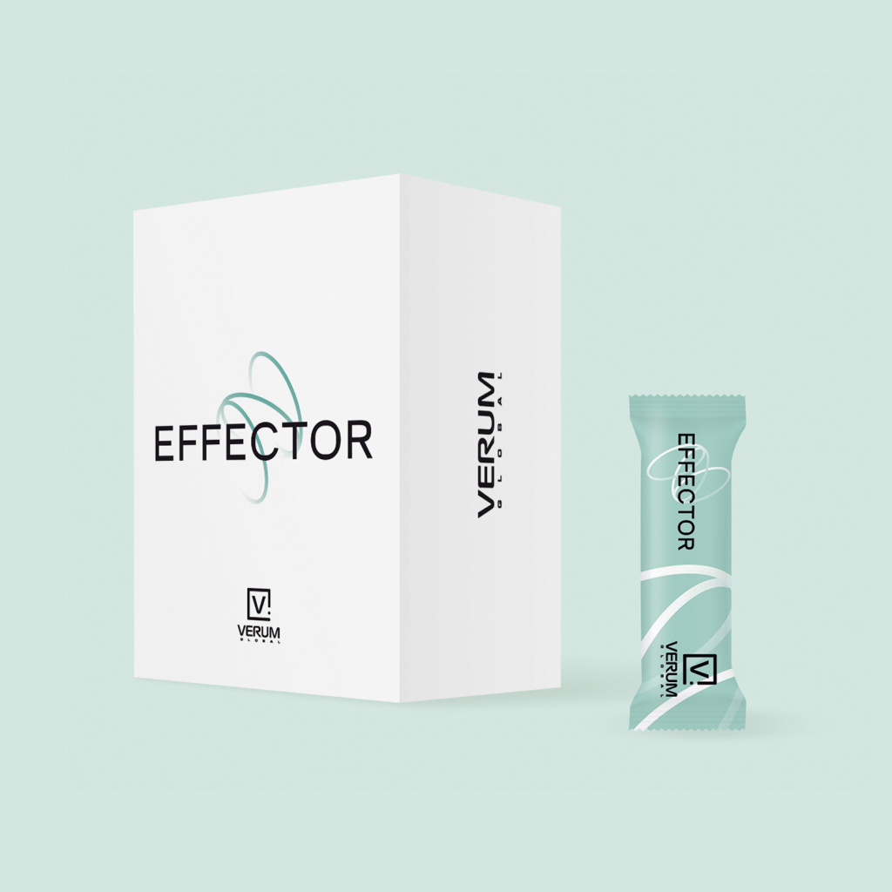

Назад в раздел

EFFECTOR
многофункциональный биомодулятор
Многофункциональный биомодулятор EFFECTOR – инновационный российский продукт для биологического и энергетического омоложения клеток.
Объем:
30 стиков по 1 гр.
3 910 ₽